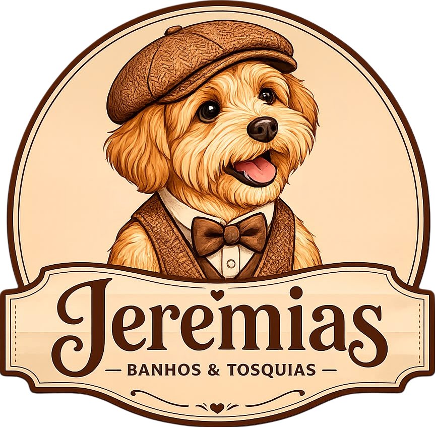
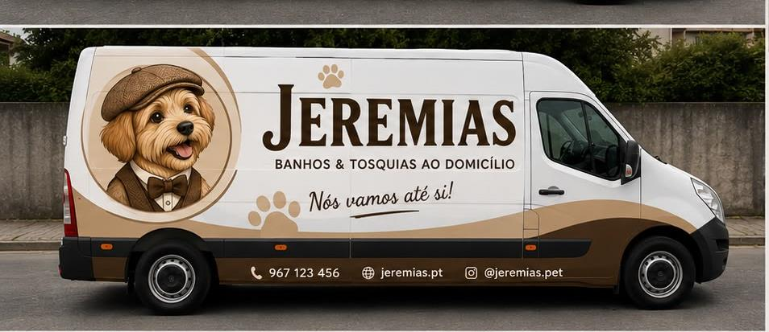
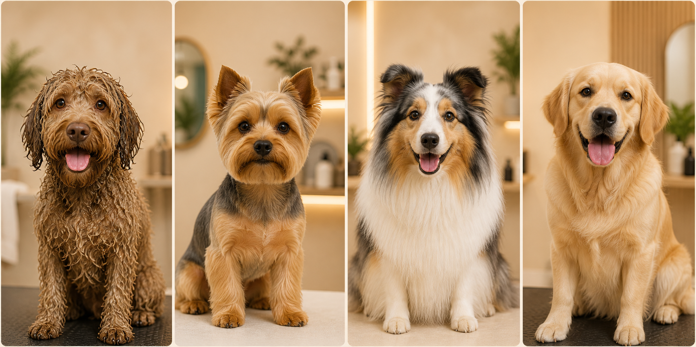

Marque
Fale connosco pelo WhatsApp e escolha o melhor dia e hora.

Jeremias Banhos & Tosquias Marcar pelo WhatsAppSem deslocações. Sem stress.
Cascais • Estoril • Oeiras
Resposta rápida
e atendimento personalizado!

Fale connosco pelo WhatsApp e escolha o melhor dia e hora.
Levamos todo o material e a nossa carrinha até sua casa.
Tratamos do seu patudo com carinho, paciência e qualidade.
Cão limpinho, cheiroso e feliz. Sem stress, sem deslocações.
Banho relaxante com produtos premium, adaptados ao tipo de pelo.

Tosquia higiénica e estética, sempre com conforto e segurança.
Remoção do subpelo morto. Mais saúde, leveza e conforto.
Banho, tosquia, limpeza de orelhas, unhas e perfume.